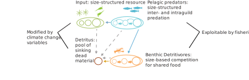

About
This organization develops and maintains the DBPM (Dynamic Benthic Pelagic Size Spectrum Model), a tool for exploring the size structure and dynamics of benthic and pelagic communities in aquatic ecosystems. DBPM is a global application for studying climate change impacts on marine ecosystems.DBPM is a coupled physical-ecological model that is forced with climate variables and can be applied globally (1 degree grid cells) or aggregated into Large Marine Ecosystems (LMEs) or other regions of interest.

Figure: Schematic of the Dynamic Benthic-Pelagic Size Spectrum Model (DBPM). Environmental inputs (top left) drive the size-structured dynamics of pelagic predators and benthic detritivores, with detritus pools and optional fishing/habitat effects.
Key Publications: Global Model Results for FishMIP
- Blanchard JL, Watson RA, Fulton EA, Cottrell RS, Nash KL, Bryndum-Buchholz A, Büchner M, Carozza DA, Cheung WWL, Elliott J, Davidson LK, Dulvy NK, Dunne JP, Eddy TD, Galbraith E, Lotze HK, Maury O, Müller C, Tittensor DP. 2018. Linked sustainability challenges and trade-offs among fisheries, aquaculture and agriculture. Nature Ecology & Evolution 1, 1240–1249. DOI:10.1038/s41559-017-0258-8
- Lotze HK, Tittensor DP, Bryndum-Buchholz A, Eddy T, Cheung WWL, Galbraith ED, Barange M, Barrier N, Bianchi D, Blanchard JL, Bopp L, Büchner M, Bulman CM, Carozza DA, Christensen V, Dunne JP, Fulton EA, Hobday AJ, Huber V, Jennings S, Jones MC, Lehodey P, Link JS, Mackinson S, Maury O, Niiranen S, Oliveros-Ramos R, Roy T, Schewe J, Shin YJ, Silva T, Steenbeek J, Stock CA, Underwood PJ, Verley P, Volkholz J, Walker ND, Walters C, Watson RA, Worm B. 2019. Global ensemble projections reveal trophic amplification of ocean biomass declines with climate change. Proceedings of the National Academy of Sciences, 116(26), 12907-12912. DOI:10.1073/pnas.1900194116
- Bryndum‐Buchholz A, Tittensor DP, Blanchard JL, Cheung WWL, Coll MC, Galbraith ED, Jennings S, Maury O, Lotze HK. 2019. Twenty‐first‐century climate change impacts on marine animal biomass and ecosystem structure across ocean basins. Global Change Biology, 25(2), 459-472. DOI:10.1111/gcb.14512
- Bryndum-Buchholz A, Prentice F, Tittensor DP, Blanchard JL, Cheung WWL, Christensen V, Galbraith ED, Maury O, Lotze HK. 2020. Differing marine animal biomass shifts under 21st century climate change among large ocean regions. ICES Journal of Marine Science, 77(7-8), 2301-2312. DOI:10.1139/facets-2019-0035
Previous Versions: Climate Change Projections
- Blanchard, J.L., Jennings, S., Holmes, R., Harle, J., Merino, G., Allen, I., Holt, J, Dulvy N.K., & Barange, M. 2012. Potential consequences of climate change for primary production and fish production in large marine ecosystems. Philosophical Transactions of the Royal Society B: Biological Sciences, 367(1605), 2979-2989. DOI:10.1098/rstb.2012.0231
- Merino G, Barange M, Blanchard JL, Harle JL, Holmes, Icarus Allen, Edward H Allison, Marie Caroline Badjeck, Nicholas K Dulvy, Jason Holt, Simon Jennings, Christian Mullon, Lynda D Rodwell. 2012. Can marine fisheries and aquaculture meet fish demand from a growing human population in a changing climate? Global Environmental Change, 22(4), 795-806.DOI:10.1016/j.gloenvcha.2012.03.003
- Barange M, Merino G, Blanchard JL, Scholtens J, Harle J, Allison EH, Allen JI, Holt J, Jennings S. 2014. Impacts of climate change on marine ecosystem production in societies dependent on fisheries. Nature Climate Change, 4(3), 211-216. DOI:10.1038/nclimate2119
- Woodworth‐Jefcoats PA, Polovina JP, Dunne JP, Blanchard JL. 2013. Ecosystem size structure response to 21st century climate projection: large fish abundance decreases in the central North Pacific in synchrony with phytoplankton productivity. Global Change Biology, 19(2), 724-733. DOI:10.1111/gcb.12076
- Woodworth-Jefcoats PA, Polovina JJ, Howell EA, Blanchard JL. 2015. Two takes on the ecosystem impacts of climate change and fishing: Comparing a size-based and a species-based ecological model in the central North Pacific. Progress in Oceanography, 138, 533-545. DOI:10.1016/j.pocean.2015.04.004
Original Model Development
- Blanchard, J.L., Jennings, S., Law, R., Castle, M.D., McCloghrie P., Rochet, M.J. & E. Benoît. 2009. How does abundance scale with body size in coupled size-structured food webs? Journal of Animal Ecology, 78, 270-280. DOI:10.1111/j.1365-2656.2008.01466.x
- Blanchard, J.L., Law, R., Castle, M.D. & S. Jennings. 2011. Coupled energy pathways and the resilience of size-structured food webs. Theoretical Ecology, 4(3), 289-300. DOI:10.1007/s12080-010-0078-9
Extensions for Habitat Complexity and Coral Reefs
- Rogers A, Blanchard JL, Mumby PJ. 2014. Vulnerability of coral reef fisheries to a loss of structural complexity. Current Biology, 24(9), 1000-1005. DOI:10.1016/j.cub.2014.03.026
- Rogers A, Blanchard JL, Mumby PJ. 2018. Fisheries productivity under progressive coral reef degradation. Journal of Applied Ecology, 55(3), 1041-1049.DOI:10.1111/1365-2664.13051
- Rogers A, Blanchard JL, Newman SP, Dryden CS, Mumby PJ. 2018. High refuge availability on coral reefs increases the vulnerability of reef‐associated predators to overexploitation. Ecology, 99(2), 450-463. DOI:10.1002/ecy.2103
Please contact Julia Blanchard if you are interested in using this model, for more information, or to get involved in development.
Repository
Visit the main repository: Benthic-Pelagic-Size-Spectrum-Model
Contact & Collaboration
Interested in collaborating or learning more? Please open an issue or contact the maintainers through GitHub.